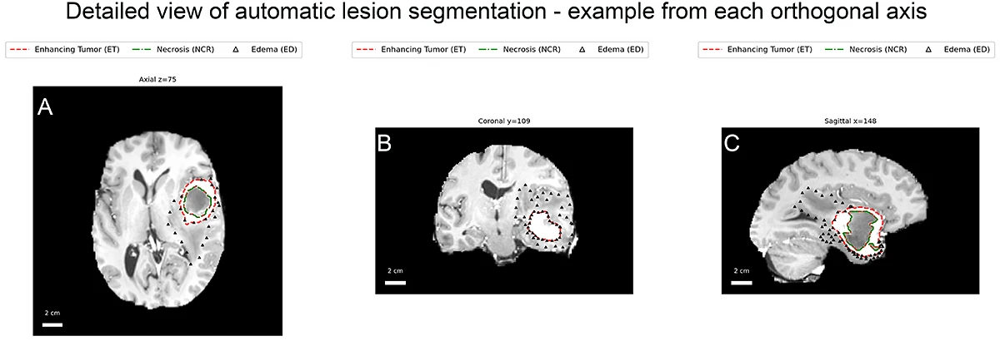

Automatic brain extraction on coronal head-and-neck MRI using the HD-BET model.
Bottom row: original slices. Top row: the same slices with the intracranial brain mask overlay.
Slices are ordered anterior → posterior.
Automated tumor segmentation on brain MRI using nnU-Net. Rows are ordered as:
axial superior→inferior, coronal anterior→posterior, sagittal left→right.
ET (red dashed), NCR (green dash-dot), ED (black triangles).
A 2 cm scale bar is shown in each panel.

Panels A (axial), B (coronal), C (sagittal) show the same lesion with
ET (red dashed), NCR (green dash-dot) and ED (black triangles). 2 cm scale bar in each panel.
Legend: ET = enhancing tumor; NCR = necrosis/non-enhancing core; ED = peritumoral edema.